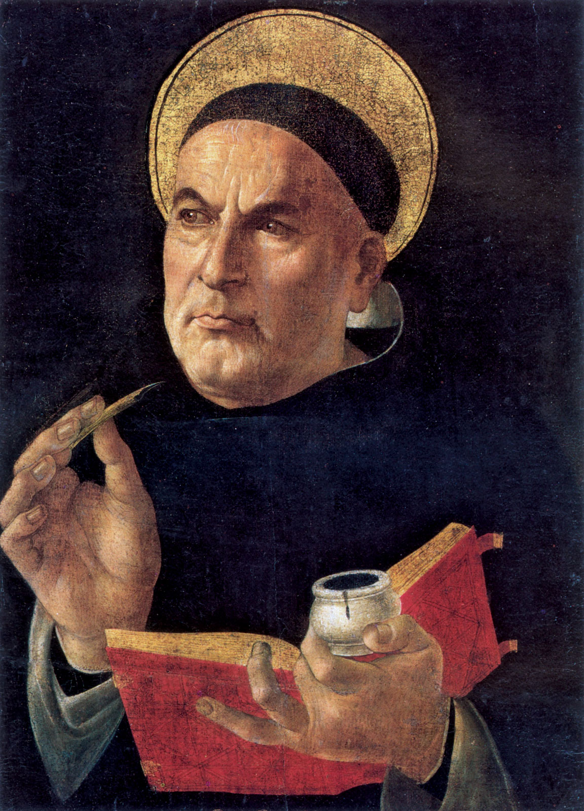

The Middle Ages
St. Augustine
354-430
Neoplatonist
(expanded Plato’s ideas to incorporate religion)
Main Beliefs
Believed there was conflict between the kingdom of God and the kingdom of the world
Believed evil was the absence of God
Believed everything was predetermined by God
Philosophical Project
To christianize Plato’s ideas

St. Thomas Aquinas
1225-1274
Empiricist
(believes everything in the mind comes from the senses)
Main Beliefs
Believed there was two paths to God: faith/Christian revelation and reason/the senses and the paths intertwined
Philosophical Project
To christianize Aristotle’s ideas